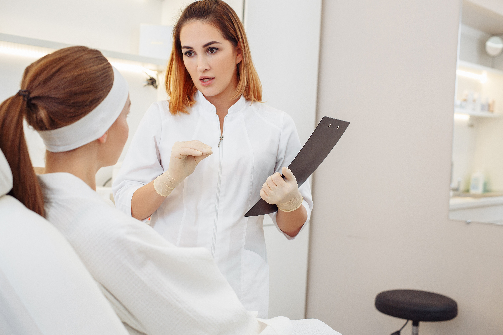

Origin in 1984 and the concept of “firming skin and reducing wrinkles”
1984, a team of engineers from Global Cosmeceutical Technology GmbH proposed to transform the results of cellular anti-aging into actual anti-aging skincare effects, namely “firming skin and reducing wrinkles”. This concept was inspired by the cell theory of the famous German scientist Virchow. As a result, they developed the first medical-grade skincare product with “firming skin and reducing wrinkles” as the core and created Cooleey.

High-end positioning of Cooleey
As an industry-recognized authority on cellular anti-aging, Cooleey represents the top achievements in medical-grade cellular anti-aging. It proposes a comprehensive solution for both intrinsic and extrinsic aging, aiming to provide scientific and effective cellular anti-aging solutions to achieve skin healing and regeneration.

Exclusive scientific research results SCF complex and BSAge complex
Cooleey has achieved remarkable results in the industry by developing the two complexes, SCF (Stem Cell Factor) complex and BSAge complex, and applying them to cellular anti-aging cosmetics. The SCF complex contains 8 stem cell extracts that are gradually upgraded over time, which can promote cell gene expression, increase cell activity, promote collagen regeneration and achieve anti-aging effects. The BSAge complex combines 12 core scientific anti-aging ingredients, which can effectively fight against photoaging caused by external factors, and slow down oxidation and saccharification processes to restore cell vitality and achieve skin healing and regeneration.

Cooleey's mission
To provide scientific and rigorous medical-grade cellular anti-aging skincare solutions to help users achieve healthier and younger skin with definite effects, and give them enough confidence to control their skin age and live their best lives.

Cooleey's vision
To become a leader in the field of skin cellular anti-aging for exquisite women, change consumers' perception of skincare and make it a pleasant experience where significant rejuvenation can be seen.